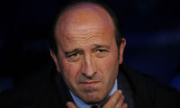
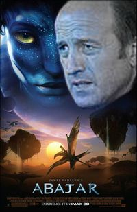
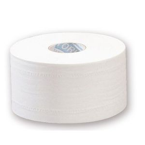
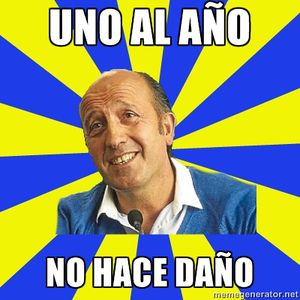
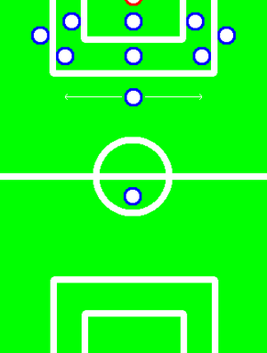
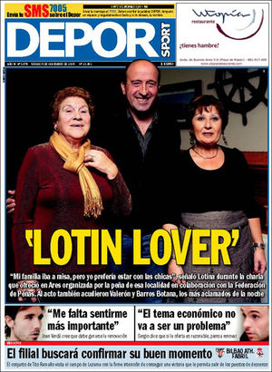
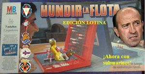

Lotina
 De: La Frikipedia, la enciclopedia extremadamente seria.
De: La Frikipedia, la enciclopedia extremadamente seria.
| De la serie furbolistas de ayer y de hoy:
|
Miguel Ángel Lotina Oruechebarría (M.A.L.O.)

|
| 
|
| M.A.L.O. descojonándose de risa
|
|
| Nacimiento
|
18 de junio de 1957
|
| Nacionalidad
|
Centro de la tierra
|
| Demarcación
|
Defensa
|
| Club actual
|
Al-Shahaniya Sports Club
|
Goles fallados marcados
|
0-0
|
| Año de debut
|
1990
|
| Club de debut
|
Logroñés
|
| También es conocido como M.A.L.O., Letrina, Lo-tima, Llorina, Alatriste, etc.
|
«(De bajo)
1. tr. Poner algo en lugar inferior a aquel en que estaba.
2. intr. Ir desde un lugar a otro que esté más bajo. U. t. c. prnl.
3. intr. Dicho de una cosa: disminuir.»
~ El DRAE acerca de Lotina
«El Villarreal se va a salvar pese a que han fichado al Alatriste éste»
~ Schuster después de que el Villarreal fichara a Lotina en vez de a él[1]. Evidentemente se equivocaba
«Al míster no hay que hacerle caso»
~ Manuel Pablo respondiendo a palabras de Lotina sobre que no sabía centrar
«Nos equivocamos con el tema del entrenador»
~ Presidente del Villarreal después de que Lotina le descendiese al primer equipo y al filial[2]
«En el purgatorio Ramos te guía al cielo y Lotina te desciende al infierno»
~ Efesios, 7
«El hombre desciende del mono, yo desciendo al mono»
~ Lotina
«Perder es ganar un poco»
~ Francisco Maturana, ex-seleccionador de Colombia, haciendo uso de la doctrina Lotiniana
Miguel Ángel Lotina Oruechebarría, más conocido como M.A.L.O., es un conocido descendedor en el mundo del fútbol. M.A.L.O. se hace pasar por entrenador para sacarle los cuartos a los clubs de Primera División. Una vez conseguido su objetivo principal, se dedica a intentar descender el club que le contrató, obteniendo grandes resultados. Su gran éxito radica en saber disimular como nadie sus verdaderos planes, certificando generalmente los descensos en la última jornada de Liga y delante de la afición del equipo que le contrata. Se especula que esta actitud es debida a que de pequeño le hicieron jugar de delantero mientras que él quería ser defensa.
Irónicamente, en una de sus últimas fechorías llevadas a cabo, consiguió convencer al Villairreal C.F. de que él era el entrenador ideal para salvarlos del descenso a la Segunda División. Después de un gran trabajo, no solo no ha conseguido salvarlos, sino que se ha llevado también por delante al Villairreal C.F. "B" a la Segunda División "B" en una gran jugada maestra por su parte.
Descripción
 El film en el que M.A.L.O. llega a Pandora como sargento de las tropas de la tierra con el objetivo de poner a raya a unos bicharracos azules
Con gusto por los medios de corte defensivo, sus tácticas han revolucionado el fútbol moderno, creando variantes tan novedosas como el cuatrivote o incluso el quintivote o, quizás, su mayor aportación, el ataque Robinson Crusoe, consistente en dejar a un joven solo (por ejemplo Adrián López en el Dépor) y desvalido ante la defensa rival sin un compañero en 20 millas a la redonda. Un nuevo concepto de fútbol sin duda el patentado por M.A.L.O., del "Dream Team" al "Nightmare Team". Sin embargo sus mayores éxitos llegaron cuando tras años de experimentos consiguió crear el llamado «mediapunta defensivo» que lo catapultaría definitivamente a la fama.
Ha creado escuela y se ha internacionalizado de tal manera que ya se conocen casos de equipos ingleses y alemanes que alinean a cuatro defensas centrales, cuatro líberos y dos mediapuntas defensivos, uno de ellos actuando de "falso mediapunta defensivo" siendo realmente un líbero más. Vamos, al más puro estilo Guardiola.
Sin embargo, cuando ve que la tragedia se aproxima, se agarra los machos (para que el peso de la mierda no le hunda los calzones) y se la juega a todo o nada, haciendo que el anteriormente citado joven desvalido deje de estar solo, sentándolo en el banquillo y metiendo en el campo un nuevo defensa para asegurarse de la derrota. Esto lo hace siempre desde que tuviera una traumática experiencia con un tal Coronitas en el Espanyol.
Además ha aprendido tácticas de tortura hacia los aficionados, que los Yakuza consideraron excesivas al conocerlas, tales como: perder tiempo cuando el equipo que entrena empata/pierde, retirar del campo a todo aquel que no juegue al pelotazo (con Valerón no lo hizo porque nunca jugó desde que le vio dar un pase en profundidad a un compañero y no a un espectador) o dar protagonismo a todo aquel que no sepa lo que es un balón (véase Antonio Tomás).
Tiene el sueño no cumplido de ser el nuevo Satanás y por eso trata de descender a los infiernos, pero por no irse solo, se disfraza de entrenador de fútbol y convence a pobres ignorantes (véase Lendoiro, Roig...) de que es el entrenador que devolverá la ilusión a sus aficiones, hundiéndolos posteriormente en la más absoluta desesperación y miseria.
 M.A.L.O. nunca sale de casa sin uno de estos.
Vida privada
Aunque se le relacionó sentimentalmente con numerosos mediocentros defensivos (como Antonio Tomás), su gran amor de siempre fue Juan Rodríguez. En una entrevista M.A.L.O. explicó que lo que le enamoró de Juan fue su gran polivalencia (juega igual de mal en todos los puestos).
Más allá de los amoríos del fútbol, M.A.L.O. está casado, aunque parezca mentira, con Ascensión (no es broma, en serio [3]).
Otros datos de interés
Según un reciente y concienzudo análisis por parte de expertos en la materia, queda demostrada la profunda animadversión del sujeto por el color azul en sus distintas variantes y combinaciones con blanco. Se rumorea (aunque aún no ha podido demostrarse) que en una ocasión, estando Piterman enfermo, ayudó a Chuchi Cos entre semana a entrenar al Alavés.
Equipos de fútbol nacionales como Málaga, Recreativo de Huelva y Real Oviedo se plantean tomar las acciones legales pertinentes para lograr la debida orden de alejamiento. Chelsea, Manchester City y la selecciones francesa e italiana, que barajaban su nombre como próximo entrenador antes de conocer este estudio, podrían seguir la senda de los clubes españoles.
Palmarés
Fútbol
 Lema de M.A.L.O. Nótese que, al descender 2 a la vez en 2012, se tomó un año sabático en 2013.
- C.D. Logroñés (1996-1997): Tocado y hundido (Despedido y descenso del equipo).
- Real Club Celta de Vigo (2002-2004): Despedido y descenso del equipo tras 12 años en Primera y quedar clasificados para la Champions League el año anterior.
- Real Club Deportivo Espanyol (2004-2006): Descenso moral, casi casi, por cuestión de segundos, fue un milagro que no bajara (véase "Enemigos conocidos").
- Real Sociedad de San Sebastián (2006-2007): Descenso del equipo tras 40 años en Primera.
- Real Club Deportivo de A Coruña (2007-2011): Descenso del equipo tras 20 años en Primera.
- Villarreal C.F. (2012): Descenso del equipo tras 12 años en Primera y quedar clasificados para la Champions League el año anterior.
- Villarreal C.F. "B" (2012): Descenso del equipo tras gran jugada maestra sin ni siquiera haberlo entrenado un día.
- Omonia de Nicosia (2014): Despedido después de tan solo 36 días, consiguiendo ser el entrenador más rápido en ser despedido de este equipo chipriota[4].
- Al-Shahaniya (2014): Dimisión después de tan solo 2 partidos (1 empate y 1 derrota)[5] (y como ya sabemos ―y el propio M.A.L.O. sabe―: «Dimitir es de mediocres». Véase "Frases célebres") y sí: descenso del equipo[6].
Otros deportes
- 27 Tours de Francia, gracias a su capacidad de ser el que mejor desciende todas las etapas de montaña.
- Varios campeonatos autonómicos, 2 nacionales y medalla de latón en un olímpico en la categoría de esquí alpino, con varios récords registrados en descenso.
Mirando hacia el futuro
M.A.L.O. estando aburrido de destrozar equipos blanquiazules decidió volver a lo grande, con nuevas ilusiones y energías renovadas. Así, en la temporada 2011-2012 M.A.L.O. puso sus ojos en algo que nadie había hecho: descender a dos equipos a la vez. Por eso firmaría por el Villairreal C.F. con la ambición de descenderlo a Segunda y llevarse por delante también al Villarreal C.F. "B" (de forma automática, por estar en Segunda, pasaría a Segunda B). Dicho y hecho, cogió al submarillo amarillo y lo llevó al puerto del mismísimo infierno, consiguiendo el doblete con su filial en una jugada maestra por su parte.
Con pocos retos ya que le motiven, M.A.L.O. se fija en los únicos equipos que nunca han descendido y así llegar hasta donde nunca nadie llegó antes. Sin embargo, desde hace tiempo se cree que el entrenador del River Plate actuaba bajo las ordenes de M.A.L.O., con lo que habría conseguido por fin satisfacer una de sus mayores ambiciones. Por otra parte, se rumoreó con que estaba pensando en dar el salto a la Selección Española de Fútbol si Vicente del Bosque no renovaba, pero esta noticia fué rapidamente desmentida al no existir la posibilidad de descenso de categoría.
De nuevo en paro desde mayo de 2012, su objetivo principal radica en cobrar los finiquitos pendientes y recuperar fuerzas con las que pueda convencer nuevamente a ingenuos presidentes.
Ya en junio, M.A.L.O., buscando y experimentando nuevas formas de conseguir descensos, decide denunciar al Deportivo (al que ya había descendido un año antes) por impago. Mediante esta denuncia pretende descenderlo de nuevo sin pasarse por allí a 'entrenar', ya que de este modo sería demasiado cantoso.
Enemigos conocidos
- Coro: Posiblemente el único punto negro en la larga y dilatada carrera de M.A.L.O. Cuando el Espanyol ya estaba descendido gracias a la magnífica e increíble labor de M.A.L.O., a este individuo no se le ocurre nada mejor que marcar en el último minuto y conseguir la permanencia. A pesar de la profunda decepción, M.A.L.O. se recuperaría y vendría más fuerte que nunca, ya que si antes le llevaba 2 años descender a un equipo, con la Real Sociedad lo consiguió en solo uno.
- Valerón: Este personaje cada vez que M.A.L.O. le daba una oportunidad, por pena más que nada, se dedica a violar todos los códigos y valores lotinianos. ¡Es tal el atrevimiento de este elemento que llega hasta a dar pases al pie!
- El rubio de Barakaldo, a.k.a Javier Clemente: otro vasco, pero que no está calvo, que compite con Lotina para ver quien consigue más descensos. Por ahora no es rival para Lotina, ya que en caso de empate, Lotina tiene menos títulos.
- Fernando Vázquez: el verdadero y gran némesis de M.A.L.O. A lo largo de su carrera, M.A.L.O. tuvo que enfrentarse con Fernando Vázquez en una lucha encarnizada por ser el "descendeitor" número 1 de la história. Cuando M.A.L.O. consiguió su primer ansiado descenso (C.D. Logroñés, 1996-97), su rival ya había conseguido el suyo (Lalín, 1989-90). En los años siguientes, Fernando Vázquez no solo desharía ese empate sino que lograría poner contra las cuerdas al mismísimo M.A.L.O. al ampliar claramente su ventaja con 3 descensos más (Compostela, 1997-98; Las Palmas, 2001-02; Rayo Vallecano, 2002-03) ganando así 1-4. Al año siguiente aún cuando M.A.L.O. conseguía un nuevo descenso (Celta, 2003-04), Fernando Vázquez lo neutralizaba con otro más (Valladolid, 2003-04) quedando la cosa 2-5. Esto mismo volvería a pasar 3 años después, el nuevo descenso de M.A.L.O. (Real Sociedad, 2006-07) era neutralizado sin problema por Fernando Vázquez (Celta, 2006-07) quedando por lo tanto 3-6. Sin embargo M.A.L.O conseguiría empatar a 6 realizando una épica remontada con 3 descensos en tan solo 2 años (Deportivo, 2010-11; Villarreal y Villarreal B, 2011-12). Pero nada contento con el empate, Fernando Vázquez añadiría un nuevo descenso a su curriculum ya al año siguiente (Deportivo, 2012-13) volviendo a superar a M.A.L.O. (6-7). El propio M.A.L.O. no se rendiría aumentando su cuenta con un equipo catarí (Al-Shahaniya, 2014–15) empatando de nuevo en un agónico 7-7. Aunque hay que tener en cuenta que en caso de empate, M.A.L.O. cuenta con el descenso moral del Espanyol (2005-06), los fans de Fernando Vázquez no están de acuerdo con esto, pues argumentan que la copa del rey ganada por M.A.L.O. con el propio Espanyol, precisamente en el año del descenso moral, lo penaliza. También se debate que descenso tiene más valor, si el del Al-Shahaniya de M.A.L.O en la primera división catarí o el del Lalín de Fernando Vázquez en la segunda B española.
Política de fichajes
M.A.L.O. suele pedir a los clubs jugadores que solo él conoce para que los fichen. Una vez fichado el jugador, dice que no sabe nada acerca de él y no lo pone nunca a jugar, con esto consigue gastar el dinero del club inutilmente para acelerar su tarea de descenderlo (ejemplo, Pepe Sand en el Deportivo).
Alineaciones
 El esquema preferido de M.A.L.O.
- La alineación preferida de M.A.L.O. es el 5-3-1-1: 5 defensas, 3 mediocentros defensivos, un mediapunta defensivo y el ya mencionado jugador desvalido en la media. La suele usar contra equipos en descenso para buscar el 0-0 (esto lo busca con todas las alineaciones) y que no sumen. Una pena que los equipos rivales marquen igual.
- En su única reunión con Joseph Blatter en su caserío de Meñaka comiendo huevos rotos con chistorra en 2008, intentó por todos los medios que instaurasen la norma del doble-portero y así poder alinear a dos guardametas para poder ahorrarse el delantero desvalido y poder reforzar la retaguardia, por si acaso. No lo consiguió y por lo tanto se vio obligado a despedir a Aouate y a Munúa, tras las discrepancias internas acerca de quién sería titular. Se salió con la suya pues el portero pasaría a ser Manu, el del filial, con el consiguiente aumento de posibilidades de descenso del equipo.
- La alineación del SuperDepor si M.A.L.O. fuese el entrenador sería:
- ______________Rufai________________
- Héctor____César____Hélder____Romero
- Scaloni__Émerson__Duscher__Capdevila
- ____________Mauro Silva[nota 1]___________
- ___________________________________
- ___________________________________
- ____________Pandiani_______________
↑ Nótese a Mauro Silva como mediapunta defensivo
- M.A.L.O. suele premiar a los mejores jugadores del partido enviándolos de manera indefinida a la grada. Se han apreciado innumerables casos en el Deportivo como son el de Valerón, Adrián o Desmarets (hay rumores que dicen que en el caso de este último jugador, M.A.L.O no le dejaba jugar porque necesitaba un conductor de autobús suplente para los desplazamientos del equipo por si causaba baja el conductor titular).
Situación habitual en los entrenamientos de M.A.L.O.
Valerón tras oír las indicaciones de M.A.L.O. desde la banda
M.A.L.O. indicando el camino a Segunda División
M.A.L.O. explicando su nuevo sistema de 8 defensas
M.A.L.O. enseñando la táctica a sus jugadores
Excusas
Para evitar que las culpas del descenso recaigan sobre él, M.A.L.O. cuenta con una gran lista de excusas que va dando a conocer en pequeñas dósis en diferentes entrevistas posteriores al descenso. Dado que el tamaño de esta lista es desconocido y no hay datos que corroboren que tal lista sea finita, solo se pondrá, a continuación, una pequeña muestra de estas excusas:

|
La culpa del descenso es del superdepor, de la deuda, de la falta de dinero, de la mala suerte, de los resultados extraños, de necesidar más de 42 puntos, de la semifinal de la Champions, de lo complicado que es estar ahí todos los años, del calendario, de los árbitros, de las lesiones, de la falta de delanteros, de los jugadores, del equipo que no se lo creía, de llevar 20 años en primera, de la cantera que es una mierda, de las renovaciones, de la falta de ojeadores, de la ciudad que tiene pocos habitantes, de la liga que es muy igualada, del mal inicio de temporada, de la directiva, del partido contra el Sporting de Gijón etc...
|

|
| M.A.L.O. intentando explicar que él no tiene la culpa del descenso del Dépor (excusas extraídas de una única entrevista [7])
|
|
|
El fútbol como deporte no es justo. Las lesiones de jugadores importantes y otros problemas inesperados han condicionado el rendimiento.
|
|
| M.A.L.O. intentando justificar en un comunicado por que fue despedido del Omonia [8]
|
Lotina en el cine
El mundo del cine no ha permanecido ajeno a la vidas de personajes que cambiaron el mundo como fueron Ghandi, Hernán Cortés o Lotina. Han sido numerosos los filmes protagonizados por M.A.LO. siempre rodados en verano tras realizar sus gestas, pero nunca ha llegado a ganar el OSCAR de la academia por su trabajo. Esta es la lista de películas que ha realizado:
- Alguien bajó del nido del cuco.
- Desciéndeme si puedes.
- Descendidos en Brujas
- Good Bye, Liga!
- Gracias por bajar.
- Resacón en Las Gaunas.
- Los Descendientes.
- ¡Cariño! He descendido a otro equipo.
- Se a quien descendiste los últimos veranos.
- Desciende como puedas VII.
- El Equipo A....... Segunda.
- Titanic.
- El Hundimiento.
- El Señor de los Descensos: El retorno del Rey.
- Seven.
- Salvar al soldado Ryan 2 (Desgraciadamente no pudo ser).
- Alguien bajó el nido del cuco.
- Lo que Lotina se llevó.
- Con Lotina y a lo loco.
- 20.000 leguas de viaje submarino.
- Adivina quien desciende esta noche.
- El sexto descenso (un film en el que Lotina ya meditaba la víctima siguiente al Villareal).
- El silencio de los descensos (un film en el que los aficionados también son los protagonistas).
- La lista de Lotina (todos los objetivos de su brillante carrera en una única superproducción).
- 4 descensos y un funeral.
- Misión Imposible 5: La Permanencia.
- The Descent.
- El descenso más largo del mundo.
- Downtrix.
- La alegría de la huerta.
- Ocean's five.
- Con Segunda en los talones.
- El gran descendedor.
- Down (secuela de la famosa animación de dibujos 'Up' basada en los sueños de Lotina).
- Atrapado en el descenso.
- Mars Deffends!
- Mar adentro.
- Regreso a Segunda (I, II y III. La trilogía).
- A la B... Verga
Frases célebres
 La frase: «Mi familia iba a misa, pero yo prefería estar con las chicas»
- ¿Que qué le digo a Mostovoi? Yo con éste lo único que hago es darle la camiseta y decirle, anda, juega - M.A.L.O. explicando sus 'entrenamientos'
- Desearía que se partiese la pierna cualquier jugador del equipo antes que Filipe Luis - M.A.L.O. demostrando su amor a la plantilla [9]
- ¿Pero tú has visto quienes son nuestros laterales? - M.A.L.O. dando a entender que la plantilla es una mierda y que él hace lo que puede
- El siguiente partido ya lo doy por perdido - M.A.L.O. intentando motivar a la plantilla
- Prefiero perder que así la prensa no habla de nosotros - M.A.L.O. y su ambición
- Me gustó el equipo entre el minuto 54 y el 54 y medio - M.A.L.O. tras salir goleado en el peor partido de la temporada
- Si no jugamos mejor me pego un tiro - M.A.L.O. marcándose un farol histórico
- Perdimos porque ellos tienen a xxx - Sea xxx cualquier jugador del equipo rival
- Dimitir es de mediocres - M.A.L.O. tras superar todos los récords negativos del equipo habidos y por haber [10]
- Tenemos un equipo mucho mejor que el año pasado - M.A.L.O. en pretemporada
- Tiene que llegar alguien ya, esto no puede seguir así - M.A.L.O. exigiendo fichajes tras no ser capaz de ganar un puto partido
- Sigo diciendo que teníamos mejor equipo que el año pasado - M.A.L.O. tras descender al equipo
- La afición echará de menos estas situaciones en unos años - M.A.L.O. antes de descender al equipo
- Yo manejo estadísticas - M.A.L.O. explicando porque Valerón no debe jugar [11]
- ¿Me ves cara de gilipollas a mí? - M.A.L.O. insiste sobre Valerón [11]
- No bajé yo, bajó el equipo - M.A.L.O. y su visión del mundo
- Asumo mi responsabilidad pero la culpa es de los demás - M.A.L.O. insiste
- Asumí la responsabilidad del descenso porque creí que hacía bien a jugadores y club - M.A.L.O. superándose a si mismo... un año después tras mejorar la frase anterior
- Todavía me despierto a las tantas con el
gol de Coro descenso del Dépor o la Real - M.A.L.O. intentando dar pena [12]
- Yo quería ir a por el partido, pero el partido se ha puesto de otra manera - M.A.L.O. después de que le expulsasen 2 jugadores al rival
- Adrián es el Ronaldo blanco - M.A.L.O. antes de deshacerse de Adrián mandándolo cedido 2 años seguidos
- Alguien en el banquillo me dijo que Bodipo estaba mareado - M.A.L.O. tras cargarse a Bodipo en el min. 30 de la 1.ª parte [13]
- Manuel Pablo en 4 años solo ha hecho un centro bueno - M.A.L.O. después de tener 4 años a Manuel Pablo como titular indiscutible [14]
- Juan Domínguez sufre para, desde fuera del área, sin portero, llegar a puerta por el aire, esto no es cachondeo - M.A.L.O. alabando a uno de sus ex-jugadores y promesa del fútbol [14]
- Rubén Castro es un goleador nato, el más listo - M.A.L.O. después de descartar a Rubén Castro
- Desmarets es un jugador que va a gustar, tiene mucha clase - M.A.L.O. opinando sobre su fichaje estrella. Actualmente sin equipo y se dice que volvió a trabajar de conductor de autobús
- Rubén Castro no sirve - M.A.L.O. después de echar a Ruben Castro, el máximo goleador del Betis esta temporada
- A Antonio Tomás lo vais a echar de menos, tiene oferta de grandes clubes de europa - M.A.L.O. justificando por que ponía a A. Tomás de titular todos los partidos[15]. Acabó sin equipo hasta que lo fichó el Zaragoza porque no encontraba nada. Lo echó a los pocos meses
- Valerón está ya para lo que está - M.A.L.O. diciendo por que no ponía a jugar a Valerón. Titular con Oltra en casi todos los partidos con el Depor en Segunda División
- Hay equipo de sobra para salvarse - M.A.L.O. antes de descender al Villarreal
- Pagamos caro jugar dos partidos por semana - M.A.L.O. poniendo excusas antes del último partido de liga que descendió al Villareal y Villareal B. Ni que los demás equipos solo jugasen los festivos y fiestas de guardar
- ¡Filipe ha marcado el Málaga! ¡No me jodas Filipe hostia! - M.A.L.O. suplicando clemencia a Filipe Luis para que tocase hacia atrás y no atacase durante el último partido que descendió al Villareal (Filipe Luis jugó en el Dépor en la etapa que M.A.L.O. lo "desentrenaba") [16]
- Lo que pasa en los últimos años en Primera es preocupante - M.A.L.O. tras descender a Villareal y Villareal B, se supone que para salvarlos de los peligros de Primera. Lo que es verdaderamente preocupante es tu currículum de descensos de equipos de la Primera División, o el próximo equipo que vayas a entrenar
- El fútbol está en grave peligro - M.A.L.O. tras descender a dos equipos a la vez sabiendo que aún habrá presidentes que le contraten
- Soy leyenda! - M.A.L.O. tras descender a dos equipos a la vez (Vale, esta última es mentira, pero pudo haberla dicho sin problema)
- Hay muy pocos entrenadores que, sin haber entrenado al Madrid o al Barça, tengan dos ascensos, una Copa del Rey, tres UEFAs con tres equipos distintos, una Champions… Mi historial lo tienen muy poquitos entrenadores, por no decir ninguno. Y eso no se recuerda y es lo que me molesta. - M.A.L.O. presumiendo de curriculum [17]
¿Sabías que...
 ¿Sabías que acaba de salir una nueva versión de Hundir la Flota? La "Edición Lotina" ¡ahora con submarinos!
- cuando se abre el telón y aparece Lotina, desciende el telón?
- cuando llega el hijo de Lotina a casa y le dice "Papá me han puesto un 0 en Mates", Lotina le contesta: "No te preocupes hijo, que es un buen resultado para la vuelta"?
- Lotina cuenta hasta cinco de la siguiente manera?: Logroñés, Celta, Real Sociedad, Deportivo, Villarreal.
- Lotina no tiene ni
puta idea de fútbol?
- no le gustan los ascensores?
- Mr. Propper le demandó por plagio de imagen?
- en 9 de cada 10 aficionados del Dépor le pagarían un billete a Siberia?
- el aficionado que falta anteriormente, pagaría a unos siberianos para cargárselo?
- Valerón es un Dios? porque Lotina no.
- las tácticas lotinianas consisten solamente en beber actimel todos los partidos, para reforzar las defensas?
- iba para entrenador de perros, pero desistió por no saber inglés?
- su tatarabuelo hundió el Titanic?
- el tatarabuelo de Lotina es más poderoso que Dios?
- se rumorea que su abuelo luchó con los Aliados hasta el 41, cuando descubrieron sus poderes y lo enviaron a Hitler para que lo contratase para dirigir ejércitos nazis?
- su abuelo antes dirigió a la República?
- también es descendiente del almirante de la Armada Invencible?
- Lotina flajela (48*pi)/(z+x)^3 veces a cada jugador que marca un gol?
- es consejero en el Fondo Monetario Internacional y candidato a la presidencia en Grecia?
- si caes en la casilla de Lotina, retrocedes hasta la salida?
- Lotina es el mayor experto del mundo en el Hundir la flota?
- a pesar del punto anterior, siempre empata en el Hundir la flota debido a que hunde todos los barcos del rival y los suyos propios a la vez?
- es también el mayor experto del mundo en el Descenso del Sella de Asturias?
- Lotina era el encargado de los cimientos en la construcción de la torre de Pisa?
- puede hacer que te baje la regla?
- el gobierno quiere contratarlo para hacer descender el paro?
- el refrán ¿Más vale malo conocido, que bueno por conocer? no es aplicable en mayúsculas? (¿Más vale M.A.L.O. conocido, que bueno por conocer?)
- en el FIFA12 si bajas a 5 equipos seguidos a segunda, desbloqueas el modo Lotina?
- a Lotina no le gustan los lanzamientos de penaltis? (porque no puede usar defensas y el portero se queda solo, indefenso y desvalido)
- Lotina va salir en el documental de National Geographic junto con James Cameron en el descenso a la Fosa de las Marianas. (Nunca el hombre descendió tan abajo)
- los científicos quieren contratarlo para ahorrar energía en sistemas de refrigeración ya que es capaz de descender las temperaturas hasta el Nitrógeno y Helio líquidos?
- también han encontrado y quieren estudiar un efecto extraño que produce incrementando la fuerza de la gravedad a su paso?
- su progenitora tuvo que ponerse de pie el día del parto porque solo podía salir en vertical?
- puedes descargar DownloadLotina 2.0 para bajar todo lo que quieras?
- no se enteró de cuando cerraron Megaupload porque él podía seguir bajando de todo?
- Gregorio Manzano es mucho mejor entrenador y mucho más alegre?
- es como Danacol, ayuda a descender el nivel de colesterol?
- cuando alguien llama al telefonillo de la casa de Lotina preguntando por él, siempre contestan "Sí, ahora baja"?
- en las casas de apuestas se puede apostar a qué equipo descenderá Lotina este año?
- es capaz de aumentar la densidad gravitatoria de un agujero negro supermasivo?
- su intrumento favorito es el contraBAJO?
Referencias
- ↑ "El Villarreal se va a salvar pese a que han fichado al Alatriste éste" [1]
- ↑ Roig: "Nos equivocamos con el tema del entrenador" [2]
- ↑ Lotina: «Mi mujer, Ascensión, es todo lo contrario» [3]
- ↑ Lotina, destituido como entrenador del Omonia [4]
- ↑ Miguel Ángel Lotina dimite como entrenador del club catarí Al Shahaniya [5]
- ↑ 2014–15 Qatar Stars League [6]
- ↑ Lotina: «El Superdépor no volverá, hemos pagado aquel esfuerzo» [7]
- ↑ Γραπτή δήλωση των Μιγκέλ Άνχελ Λοτίνα και Ενρίκε Αλόνσο Φερνάντες [8]
- ↑ Lotina: "Filipe Luis es casi un hijo para mí y no se lo merecía" [9]
- ↑ Lotina no piensa en dimitir [10]
- ↑ 11,0 11,1 El asunto Valerón encrespa a Lotina [11]
- ↑ Lotina confiesa que todavía le da vueltas al descenso con el Deportivo del verano pasado [12]
- ↑ Bodipo informó al banquillo de que era Guardado el que estaba mareado [13]
- ↑ 14,0 14,1 Lotina critica a jugadores del Depor [14]
- ↑ Lotina sobre Antonio Tomás [15]
- ↑ El día después, jornada 38 (2012) [16]
- ↑ Lotina: "Los descensos están marcando mi carrera" [17]
Enlaces externos
Audio y Vídeos
Imágenes
Autor(es):
- Krusher
- Fordus
- Conan
- 1234567
- Genericool
- Deimos987
- Shadowmura
- Not so friki
- Kassu
- Eospheux
Frikipedia 2005-2016, Licencia
GFDL 1.2 - Extraído por FrikiLeaks
{kind=link}
{kind=link}
{kind=link}
{kind=link}